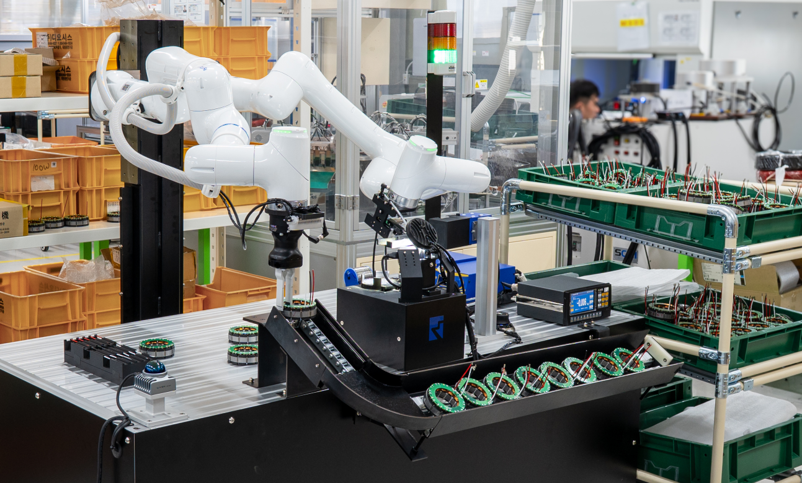
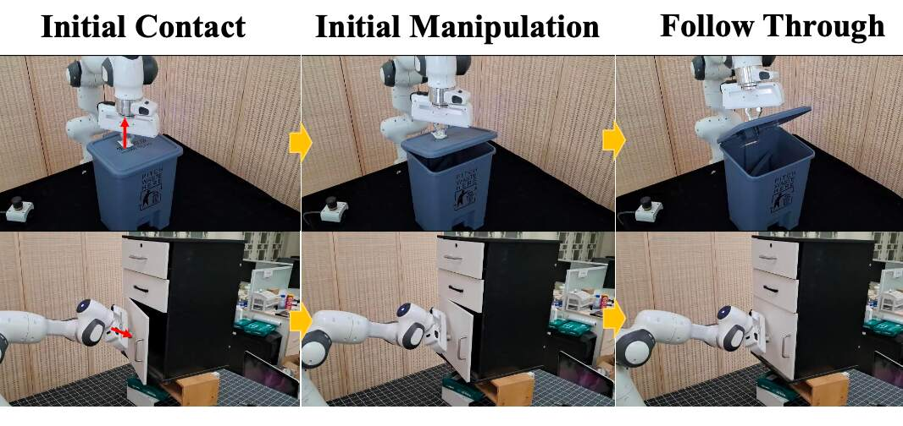
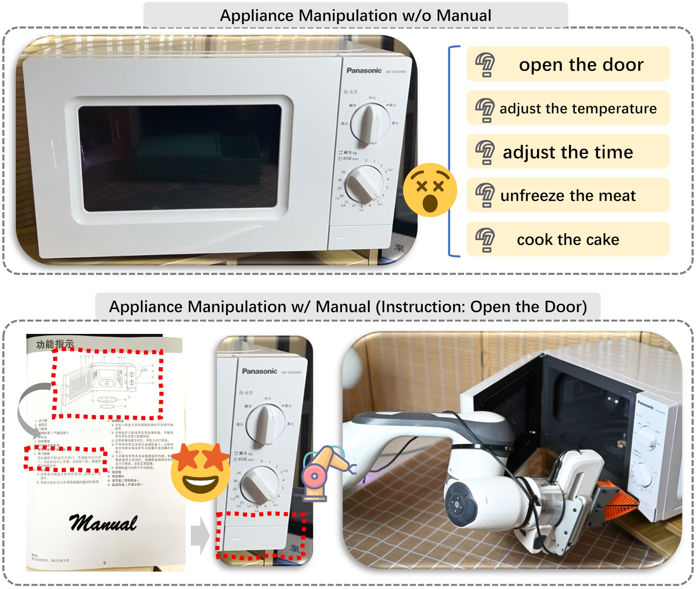
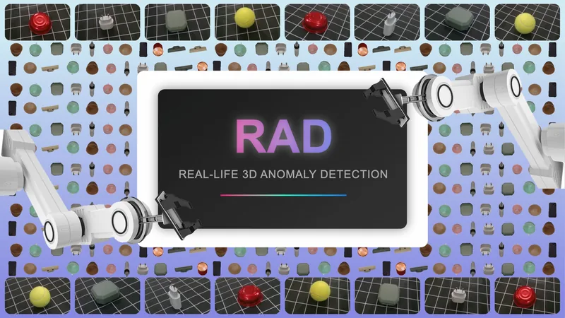
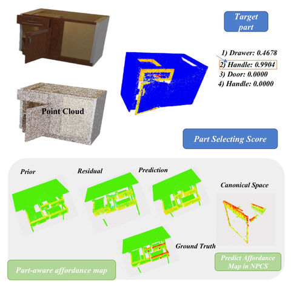

Taewhan Kim 김태환
Research Engineer · Neuromeka
I am a research engineer at Neuromeka, mentored by Dr. Joonho Lee, working on learning-based robot manipulation for real-world manufacturing. I am also fortunate to collaborate with Prof. Sehoon Ha at Georgia Tech, where I have been a visiting researcher since September 2026.
I received my M.S. in Computer Science from Peking University, advised by Prof. Hao Dong, and my B.Eng. in Electrical and Electronic Engineering from the University of Nottingham Ningbo China.
My research interests include contact-rich manipulation and deploying robot learning in industry.
News
- 2026.09 Started as a visiting researcher at Georgia Tech with Prof. Sehoon Ha.
- 2026.09 Co-organized the Scaling vs. Structure? Rethinking Bimanual Manipulation Beyond Single-Arm Policies workshop at IROS 2026.
- 2026.04 Our paper on learning-augmented robotic automation for manufacturing is released on arXiv.
- 2025.06 ManipGPT accepted to IROS 2025.
- 2025.02 CheckManual accepted to CVPR 2025.
Publications
* equal contribution · † corresponding author

A production-grade bimanual cobot doing motor cable pick, insertion and soldering in a shared factory workspace. It reached 99.4% insertion reliability and assembled 108 motors over 5 hours.

Uses a large vision model to segment affordances so a robot knows where to interact with articulated objects, without complex datasets or perception pipelines.

A benchmark where robots must read an appliance's manual to operate it correctly.

A real-world multi-view dataset for detecting anomalies in objects seen from any pose.

Learns part-aware affordances that tell a robot which part of a 3D articulated object to act on.
Academic Service
- Workshop Organizer & Host, Scaling vs. Structure? Rethinking Bimanual Manipulation Beyond Single-Arm Policies @ IROS 2026
- Reviewer, Conference on Robot Learning (CoRL) 2026
- Reviewer, NeurIPS 2022 Workshop on Human-in-the-Loop Learning (HILL)
Education & Experience
Visiting Researcher · Advisor: Prof. Sehoon Ha
Research Engineer · Advisor: Dr. Joonho Lee
Research Intern
M.S. in Computer Science · Advisor: Prof. Hao Dong
B.Eng. in Electrical and Electronic Engineering